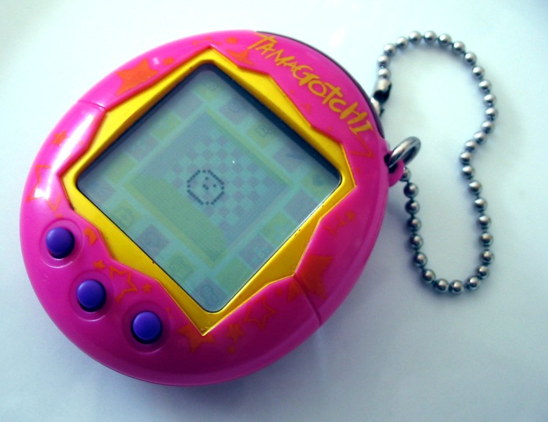

In the year 2026, the internet is dominated by discussions about artificial companionship. Startups boasting millions of active users offer AI friends, digital romantic partners, and virtual therapists. We endlessly debate the ethics of large language models that perfectly mimic empathy, wondering what it means when human beings form deep, abiding emotional attachments to lines of code hosted on remote, sterile server farms.
Yet, to truly understand this profound shift in human-computer interaction, the Mimms Museum asks you to look past the massive server racks and multi-billion parameter neural networks. Instead, we invite you to gaze upon a plastic, egg-shaped keychain with three small rubber buttons and a monochrome, unlit liquid crystal display. Released in 1996, the Bandai Tamagotchi was not just a passing toy fad. It was the absolute genesis of the artificial companion—the first machine to successfully hack the human caregiving instinct on a global scale.
Conceived by Aki Maita of Bandai and Akihiro Yokoi of WiZ, the Tamagotchi (a clever portmanteau of the Japanese word "tamago," meaning egg, and the English word "watch") was designed to solve a uniquely urban problem. In dense metropolitan areas like Tokyo, strict apartment regulations, long working hours, and a severe lack of space made traditional pet ownership nearly impossible for many families and young professionals. Maita, who observed the stress of city life and the innate, unfulfilled desire for companionship among young people, envisioned a pet that could live entirely within a pocket.
The hardware inside this plastic egg was delightfully primitive by today's standards. It ran on a bespoke 8-bit CPU, powered by a single CR2032 button cell battery, with a screen resolution of just 32 by 16 pixels. There was no backlight, no internet connectivity, no haptic feedback, and no complex operating system—just a piezoelectric speaker capable of emitting a piercing, insistent series of monophonic beeps. Yet, within those severe hardware constraints, Yokoi and Maita encoded a rudimentary but brilliant state machine that simulated the entire lifecycle of an alien creature, from an egg hatching on the screen to its eventual, inevitable demise.
The enduring brilliance of the Tamagotchi lay not in its processing power, but in its psychological architecture. Prior to 1996, consumer video games were inherently episodic. You turned on a console, played a game, saved your progress (or didn't), and turned the machine off. The universe within the microchip paused while you were away. The machine waited on you.
The Tamagotchi completely inverted this paradigm by introducing persistent, real-time stakes. The 32-pixel creature inside the plastic shell existed on a continuous temporal continuum. It experienced hunger, required discipline for bad behavior, accumulated digital waste that needed cleaning, and periodically fell ill. Most importantly, it demanded attention on its own schedule. If it was hungry, it beeped loudly. If it needed to sleep, the user had to manually press a button to turn off the virtual lights. If left alone while the user went to school or work, it would suffer.
By designing a system that required ongoing, active maintenance, the creators fundamentally shifted the dynamic between user and machine. We were no longer using a tool; we were serving a dependent. This manufactured vulnerability is exactly what triggered the human caregiving response. The Tamagotchi effect demonstrated that humans do not need high-fidelity 3D graphics, motion capture, or natural language processing to feel deep empathy. We simply need an entity that relies on us for its survival.
When it hit the market, the Tamagotchi triggered a global frenzy unlike anything seen in the tech sector before. By 1999, over 40 million units had been sold worldwide. It became a ubiquitous cultural touchstone, carried by children on playgrounds, teenagers in malls, and business executives in boardrooms alike. But with this unprecedented digital attachment came an entirely new psychological phenomenon: digital grief.
Because the Tamagotchi could "die"—represented initially by a ghost and a gravestone on the Japanese versions, and a winged angel on international releases—users experienced genuine emotional distress when their virtual pets perished due to neglect or the programmed inevitability of old age. Physical pet cemeteries in England, Germany, and Japan began offering actual burial plots for deceased Tamagotchis. Psychologists and sociologists suddenly found themselves observing children and adults experiencing the five stages of mourning over a tiny cluster of deactivated pixels.
This was a watershed moment in the history of computing. It empirically proved that emotional investment in a purely digital entity was not only possible but profound. Schools worldwide banned the devices, not merely because the incessant beeping was disruptive to lectures, but because students were too emotionally compromised by the declining health of their virtual pets to focus on their lessons. The stakes felt entirely real, even if the pet was made of silicon and code.
Today's digital landscape is defined by the rise of AI companions—chatbots powered by large language models that offer nuanced conversation, tailored personalities, and 24/7 availability without complaint. Platforms like Character.ai and advanced voice modes have created digital entities that can simulate human interaction with startling accuracy.
But while these modern companions are infinitely more articulate than a Tamagotchi, they often lack the fundamental mechanic that made the 1996 toy so deeply compelling: vulnerability.
A modern AI companion does not "die" if you ignore it for a week. It does not demand that you clean up after it, nor does it interrupt your dinner with a cry of distress because it is hungry. It exists solely to serve the user's emotional needs, perfectly subservient and permanently available. In removing the burden of care, modern tech developers may have also removed the essential friction that creates deep, enduring bonds.
The Tamagotchi reminds us that true companionship, even with a machine, is a two-way street of mutual reliance. It suggests a provocative critique of modern AI: we love the things we care for, precisely because they are vulnerable to our neglect. An AI that needs nothing from us may ultimately mean nothing to us.
The physical industrial design of the Tamagotchi also merits serious consideration when viewing it in our collection. Its egg shape was universally recognized as a symbol of birth, fragility, and potential. The three-button interface—labeled A, B, and C, generally functioning as scroll, execute, and cancel—established a physical rhythm to the act of care. The tactile, satisfying click of the rubber buttons became a comforting, repetitive action, much like stroking a cat or walking a dog.
This physicality is something increasingly lost in the modern era of frictionless glass touchscreens and voice commands. The Tamagotchi was a dedicated, single-purpose piece of hardware. It did not send you emails, it did not browse the web, and it did not track your GPS location for advertisers. Its sole purpose was to house a life. This singularity of purpose made the device feel less like a multi-tool computer and more like a dedicated vessel for a living spirit.
As you view the original 1996 Bandai Tamagotchi in the Mimms Museum's "Silicon & Society" wing, consider its vital place in the long lineage of artificial intelligence. It did not possess a complex neural network. It could not pass the Turing Test. But it passed a far more important metric for the future of human-computer interaction: the Empathy Test.
It paved the way for AIBO, Sony's robotic dog; for Paro, the therapeutic robot seal used in dementia care facilities; and ultimately, for the highly advanced conversational agents we interact with today. The Tamagotchi stands as a permanent monument to the human capacity for love—a capacity so vast, so eager, and so fundamentally wired into our psychology that it can be triggered by nothing more than a handful of moving pixels and a piezoelectric beep.
In our relentless pursuit of more intelligent machines, we often assume that emotional connection will naturally follow cognitive capability. The Tamagotchi proves the exact opposite. It shows us that to build a machine we can love, we don't necessarily need to make it incredibly smart. We just need to make it need us.